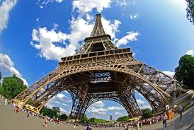
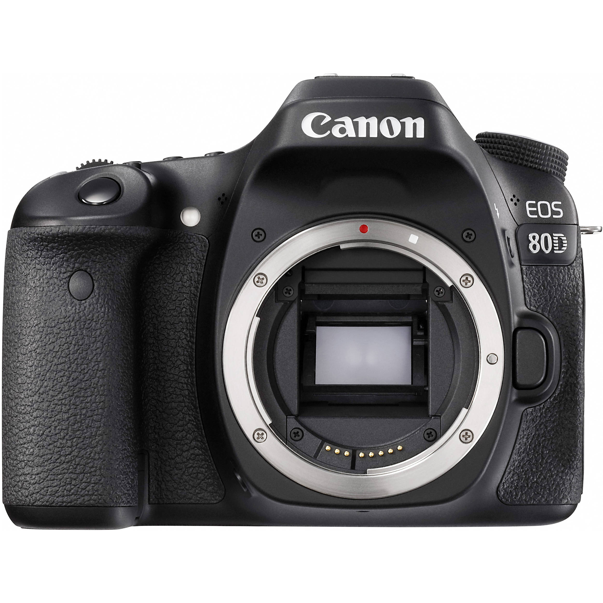
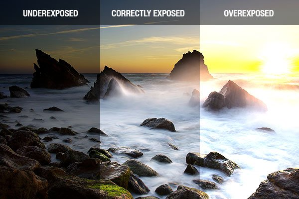

Beginners breakdown
What is Photograghy?
Photograghy literally means drawing with light. Your camera is like your paint brush and you use it to capture visuals we cannot see with the naked eye. Everyone has their own style, my advise would be to research different photographers and see which ones you like and why.

Types of Cameras
Camera have evolved over time. We went from film, to digital. We went from mirror cameras to mirrorless. But which is better? Well neither out performs the other. It's really just about personal preference.


Exposure
Exposure is the amount of light you are allowing into the image sensor in your camera. Exposure plays the most imporant role in photograghy. Without good exposure your photos will always fall short either being ovr exposed or under exposed. The way to control the exposure is by understanding what shutter speed, iso, and apature are.
